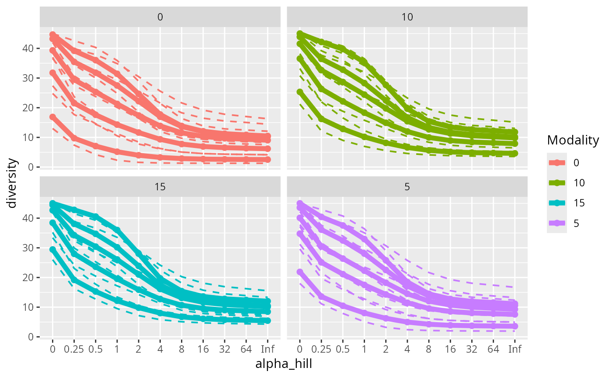

Hill Diversities and Corresponding Accumulation Curves for phyloseq
Source:R/plot_functions.R
hill_curves_pq.Rd
Basically a wrapper of vegan::renyi() and
vegan::renyiaccum() functions
Usage
hill_curves_pq(
physeq,
merge_sample_by = NULL,
color_fac = NULL,
hill_scales = c(0, 0.25, 0.5, 1, 2, 4, 8, 16, 32, 64, Inf),
nperm = NULL,
na_remove = TRUE,
wrap_factor = TRUE,
plot_legend = TRUE,
linewidth = 2,
size_point = 2,
...
)Arguments
- physeq
(required): a
phyloseq-classobject obtained using thephyloseqpackage.- merge_sample_by
a vector to determine which samples to merge using the
merge_samples2()function. Need to be inphyseq@sam_data- color_fac
(optional): The variable to color the barplot. For ex. same as fact. If merge_sample_by is set, color_fac must be nested in the merge_sample_by factor. See examples.
- hill_scales
Scales of Rényi diversity.
- nperm
(int Default NULL) If a integer is set to nperm, nperm permutation are computed to draw confidence interval for each curves. The function use
vegan::renyi()if nperm is NULL andvegan::renyiaccum()else.- na_remove
(logical, default FALSE) If set to TRUE, remove samples with NA in the variables set in merge_sample_by. Not used if merge_sample_by is NULL.
- wrap_factor
(logical, default TRUE) Do the plot is wrap by the factor
- plot_legend
(logical, default TRUE) If set to FALSE, no legend are plotted.
- linewidth
(int, default 2) The linewidth of lines.
- size_point
(int, default 1) The size of the point.
- ...
Other arguments passed on to
vegan::renyi()function orvegan::renyiaccum()if nperm is not NULL.
Details
This function is mainly a wrapper of the work of others.
Please make a reference to vegan::renyi() or
vegan::renyiaccum() functions
Examples
if (requireNamespace("vegan")) {
hill_curves_pq(data_fungi_mini, merge_sample_by = "Time")
hill_curves_pq(data_fungi_mini, color_fac = "Time", plot_legend = FALSE)
hill_curves_pq(data_fungi_mini,
color_fac = "Time", plot_legend = FALSE,
nperm = 9, size_point = 1, linewidth = 0.5
)
hill_curves_pq(data_fungi_mini,
nperm = 9, plot_legend = FALSE, size_point = 1,
linewidth = 0.5
)
hill_curves_pq(data_fungi_mini, "Height",
hill_scales = c(0, 1, 2, 8), plot_legend = FALSE
)
hill_curves_pq(data_fungi_mini, "Height",
hill_scales = c(0, 0.5, 1, 2, 4, 8),
nperm = 9
)
hill_curves_pq(data_fungi_mini, "Height", nperm = 9, wrap_factor = FALSE)
data_fungi_mini@sam_data$H_T <- paste0(
data_fungi_mini@sam_data$Height,
"_", data_fungi_mini@sam_data$Time
)
merge_samples2(data_fungi_mini, "H_T")
hill_curves_pq(data_fungi_mini, "H_T", color_fac = "Time", nperm = 9)
}
#> 17 were discarded due to NA in variables present in formula.
#> At least one sample name start with a zero.
#> That can be a problem for some phyloseq functions such as
#> plot_bar and psmelt.
#> Cleaning suppress 0 taxa and 0 samples.
#> Cleaning suppress 0 taxa and 0 samples.
#> Cleaning suppress 0 taxa and 0 samples.
#> Cleaning suppress 0 taxa and 0 samples.
#> 47 were discarded due to NA in variables present in formula.
#> Cleaning suppress 0 taxa and 0 samples.
#> 47 were discarded due to NA in variables present in formula.
#> Cleaning suppress 0 taxa and 0 samples.
#> 'nperm' >= set of all permutations: complete enumeration.
#> Set of permutations < 'minperm'. Generating entire set.
#> 47 were discarded due to NA in variables present in formula.
#> Cleaning suppress 0 taxa and 0 samples.
#> 'nperm' >= set of all permutations: complete enumeration.
#> Set of permutations < 'minperm'. Generating entire set.
#> Cleaning suppress 0 taxa and 0 samples.
